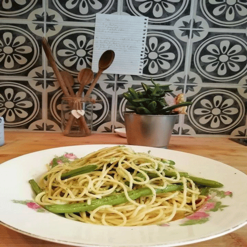
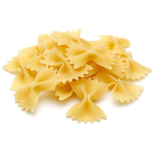
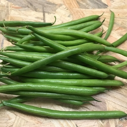
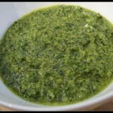

RECETTES
ENTREE
PLATS
DESSERTS
SAUCES
CONSEILS
BLOG

  
Recettes de pâte pesto
Ingrédients :
500g de pâtes
Sauce pesto
500g d’haricots
Faire bouillir de l’eau pour les pâtes.
Lorsque l’eau boue, mettre les pâtes et remuez.
Pendant ce temps mettre un oignon émincé dans une poêle avec de l’huile d’olive.
Ajoutez les haricots dans la poêle. Bien mélanger.
Lorsque les pâtes sont cuites, ajoutez les haricots et la sauce pesto.